Префектура Фукуи · город Фукуи · сакэ
Сакэварня Jozan в Фукуи: четыре времени года в бутылке
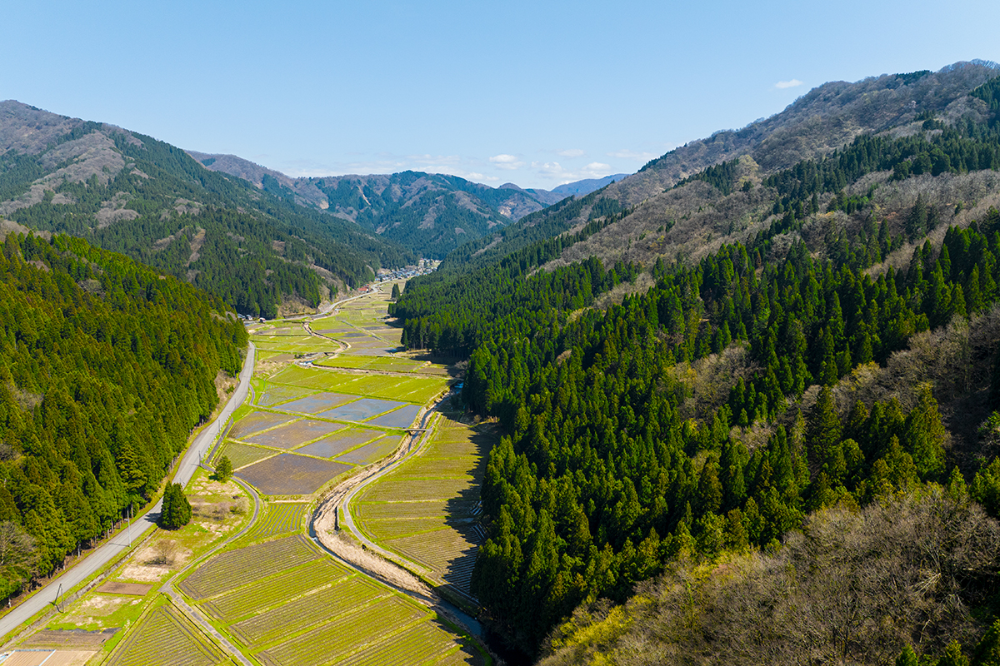
Сакэварне Jozan в городе Фукуи больше двухсот лет. В 2022 году её возглавил представитель девятого поколения семьи, и с тех пор здесь варят сакэ, в котором можно узнать весну, лето, осень и зиму именно этой префектуры.
Семья
От торгового порта к сакэварне
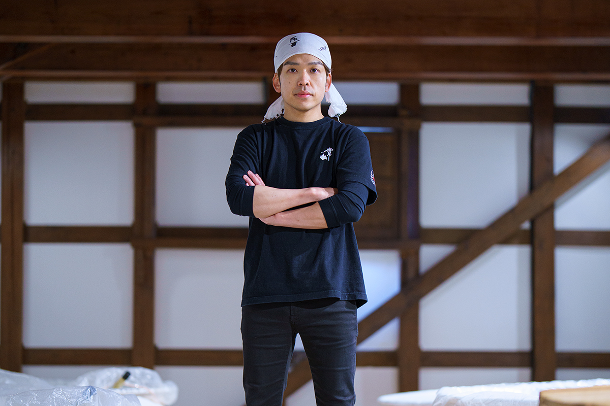
История семьи Токояма начинается в начале XVII века в Микуни-минато, одном из крупнейших торговых портов Японии на побережье Японского моря. Под торговым именем «Ватая» предки семьи были поставщиками княжества Фукуи, затем стали признанными княжеством менялами, а в конце периода Эдо начали варить сакэ под маркой «Дзёсюку». Позднее марку переименовали в Jozan. Сама сакэварня работает в городе Фукуи больше двухсот лет.
Место для сакэ здесь удачное. Сакэварню окружают Японское море и зелёные горы Этидзэн, вода из системы горы Хакусан богата минералами, а сама префектура издавна считается одним из главных рисовых краёв страны. В Фукуи говорят «эцудзан-дзякусуй»: зелёные горы Этидзэн и чистые воды Вакасы. Это ещё и край, где хватает и морской, и горной еды.
1 октября 2022 года сакэварню возглавил Симпэй Токояма, и марка Jozan была полностью обновлена. Его отец создал марку Jozan и вскоре после этого умер.
«Думаю, отец ушёл, не успев сделать задуманное. А я до пандемии просто бежал вперёд: надо варить, надо продавать. Зачем варить сакэ именно в Фукуи, я тогда не понимал»
Симпэй Токояма
Пандемия сильно ударила по сакэварням. Симпэй решил использовать паузу, чтобы подумать, и нашёл ответ в словах, которые сделал девизом сакэварни: «варить гармонию». В Японии говорят «вадзё рёсю»: хорошее сакэ рождается из согласия тех, кто его делает. Симпэй пошёл дальше. Гармония, по его словам, нужна с природой и традицией, с соседями и товарищами по работе и с теми, кто любит сакэ.
Сакэварня
Дегустационный зал и молодая команда
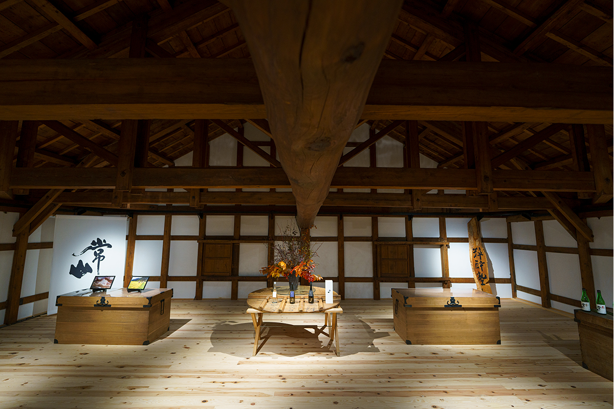
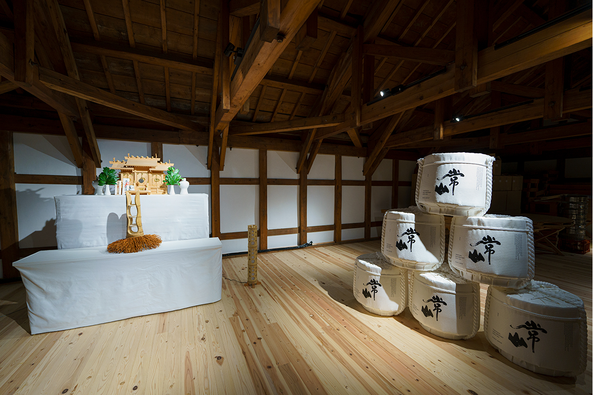
Специалист по сочетанию сакэ и еды, одна из самых известных в Японии, говорит, что сакэ Jozan с его чистым и в то же время насыщенным вкусом нельзя назвать просто сухим: за ним чувствуются природа и кухня Фукуи. Её интересует не только вкус, но и подход сакэварни.
После обновления линейка Jozan строится на пяти темах: гармония с едой, с местом, с природой, с традицией и с мастерами. Иначе говоря, отточенная техника служит тому, чтобы передать в сакэ свой край.
«Сакэварни есть по всей Японии, но весна, лето, осень и зима на севере Хонсю и у нас, на побережье Японского моря, выглядят по-разному. Другие пейзажи, другие продукты, другой воздух. Раз мы местная сакэварня, я решил, что нужно передавать четыре сезона Фукуи, где я вырос»
Симпэй Токояма
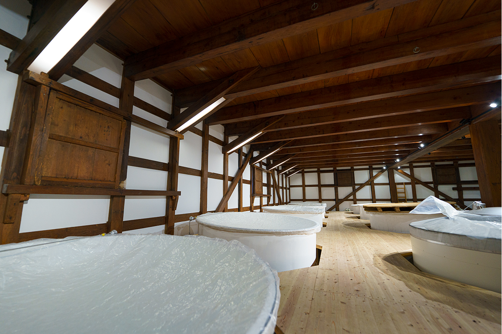
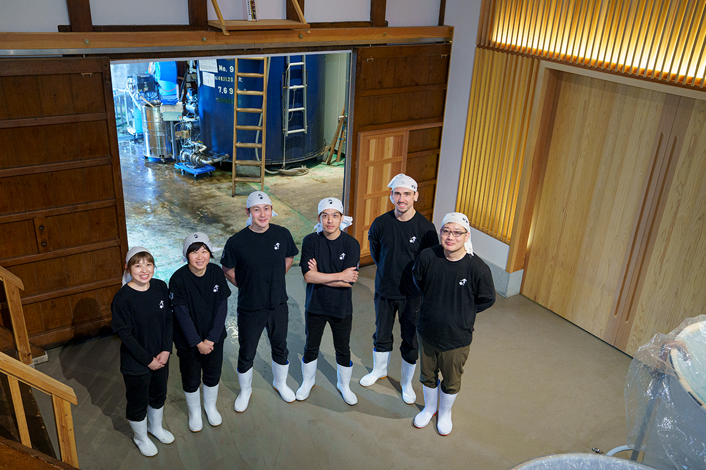
Весна в сакэварне
Мы приехали в начале апреля 2024 года, когда сезон варки подходил к концу. День начинается с пара: рис для сакэ готовят на пару, и по мере готовности меняется даже запах. Данные анализов здесь копят тщательно, но последнее слово остаётся за вкусом мастеров.
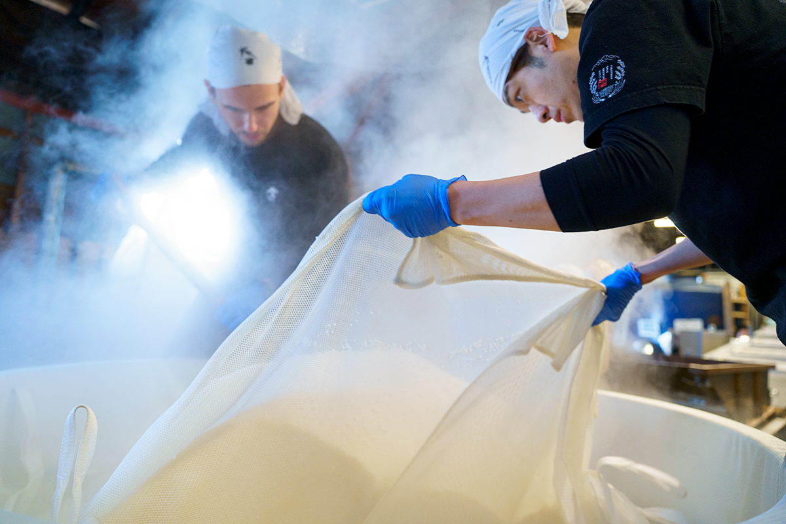
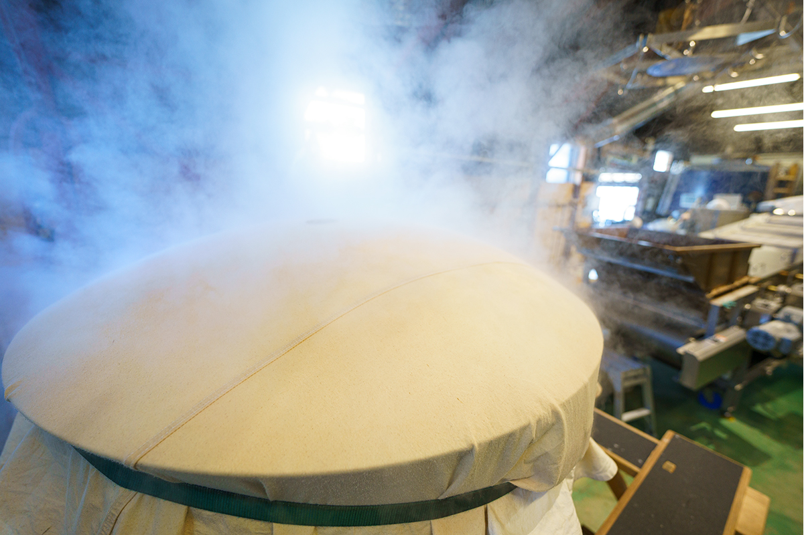
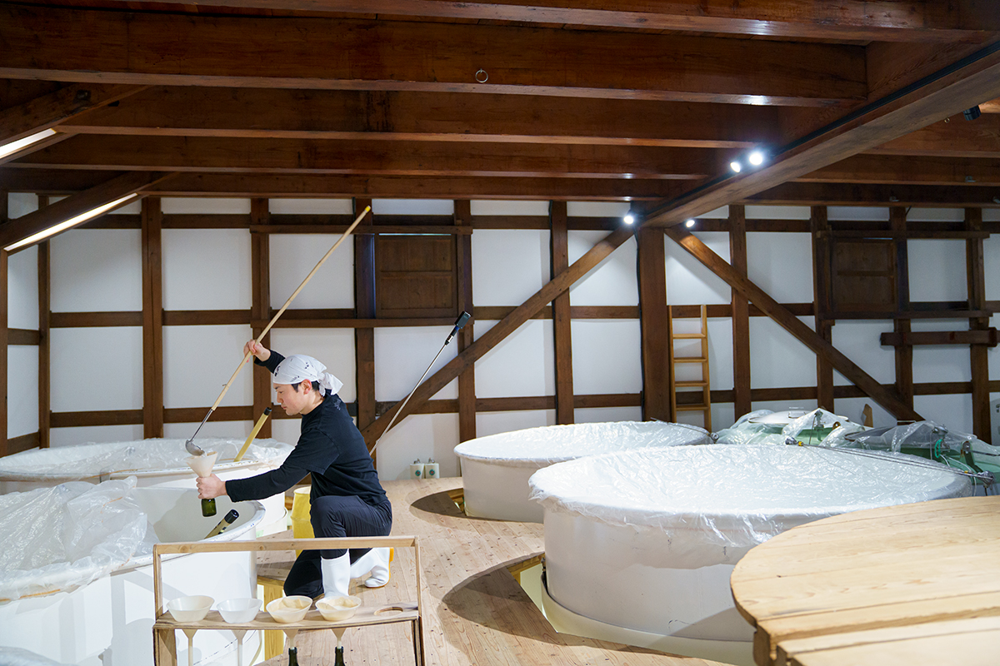
Лето
Gentatsu: сакэ со вкусом лимонада
Летнее сакэ, «нацудзакэ», появилось в Японии примерно в 2006 году. Обычно его представляют лёгким и освежающим, иногда игристым, с невысоким градусом или кисловатым. Сакэ, которое передаёт лето одного конкретного края, встречается гораздо реже.
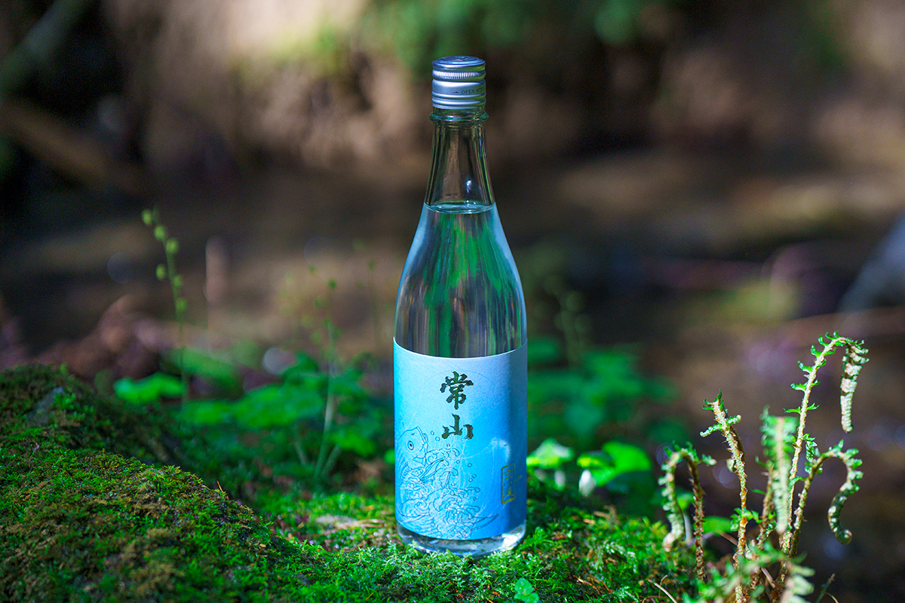
Летнее сакэ Jozan называется Gentatsu, по морскому району Гэнтацу-сэ. Это место у рыболовов считается почти легендарным: туда около 40 минут идти на лодке от порта Микуни, откуда родом семья, и открыт он для лова всего два месяца в году, примерно с июня по август. Там ловят огромных желтохвостов хирамаса и морских карасей мадай. По словам Симпэя, крупный мадай из Гэнтацу-сэ для Фукуи главная примета лета. Вкус у сакэ свежий, как у японского лимонада рамунэ, и оно подходит к летней еде, особенно к белой рыбе. У Gentatsu четыре составляющих.
Рис Гохякумангоку из Мияма
Рис для Gentatsu растят по контракту фермеры района Мияма в городе Фукуи, с очень малым количеством пестицидов и удобрений. В том же районе растёт и другой ранний сорт для сакэ, Мияма-нисики, но для лета выбрали Гохякумангоку: с ним у сакэ более чистое послевкусие.
Вода из источника Косёдзу
На поля Мияма стекает источник «Косёдзу-но юсуй», который берёт начало у горы Ибури-яма высотой 884 метра. Вода даже в разгар лета около 11 градусов, в ней в меру минералов, и вкус у неё мягкий. Этой же водой поливают рисовые поля и ставят сакэ: Симпэй принципиально использует одну воду для обоих дел.
Дрожжи FK-501
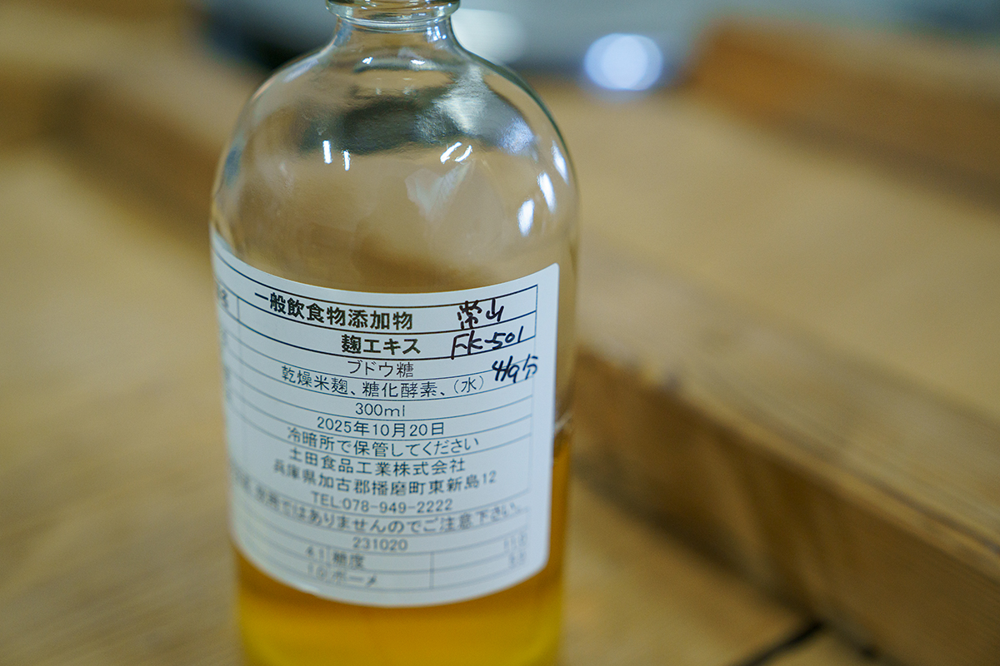
Дрожжи отвечают за фруктовый аромат сакэ гиндзё. Для Gentatsu выбрали фукуйские дрожжи FK-501. В других сортах сакэварня иногда смешивает их со своими дрожжами, но для летнего сакэ, где аромат должен быть сдержанным, их используют в чистом виде.
«Мы думали о летних продуктах и рыбе Фукуи. Поэтому выбрали рис с чистым послевкусием и дрожжи со спокойным ароматом»
Симпэй Токояма
Этикетка с морским карасём
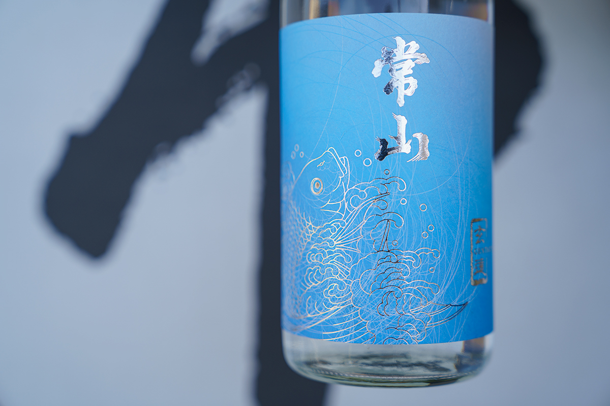
Этикетку нарисовал мастер монсё уваэси, художник, который пишет фамильные гербы на кимоно. Мадай мощно выпрыгивает из волн открытого моря.
«Огромный мадай с Гэнтацу-сэ это примета лета в Фукуи. Мне хотелось, чтобы через летнее сакэ люди узнали, что у нас есть такое место»
Симпэй Токояма
Всё, что нужно для этого сакэ, по словам Симпэя, оставил ему отец. Рисовые поля, вода, сотрудничество с мастером по выращиванию риса и с художником гербов: в Gentatsu сходятся люди, а девиз «варить гармонию» здесь понимают буквально.
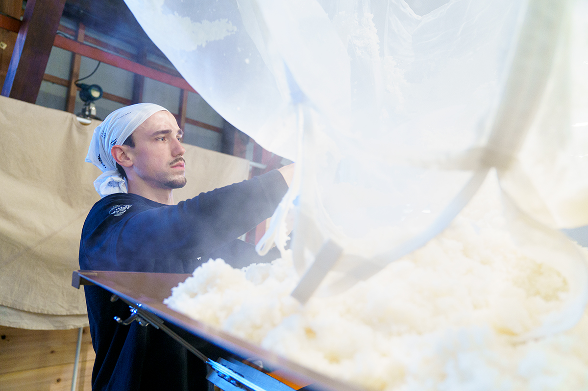
Сезоны
Пять сакэ на весь год
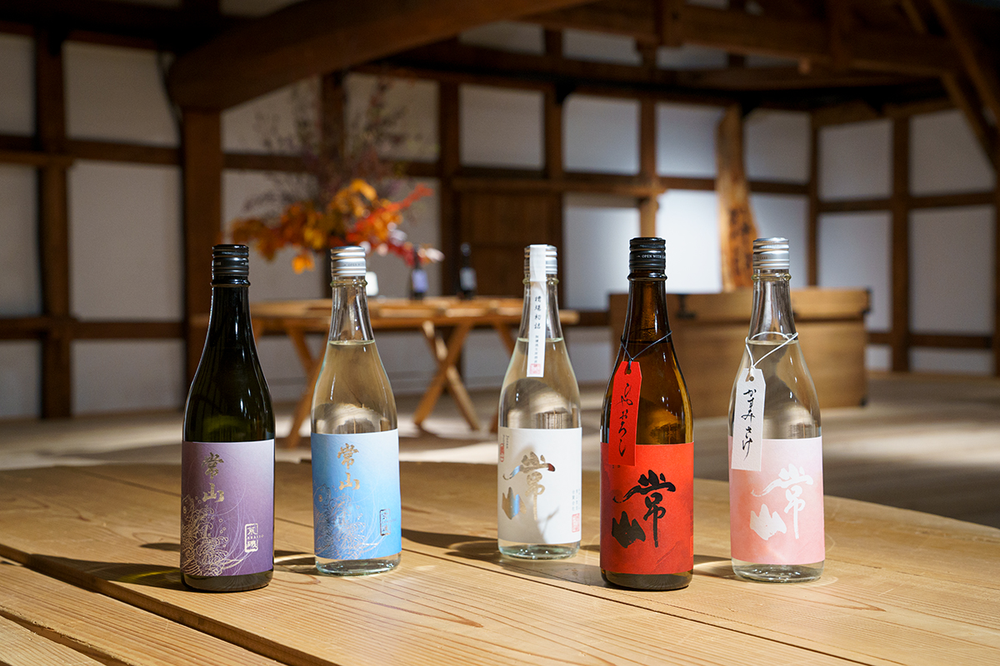
В мире сакэ есть сезонные обычаи вроде «первого отжима» зимой и «хияороси» осенью. Но сакэварен, которые передают четыре сезона своего края, мало. Jozan выпускает сезонные сакэ, в которых соединяет то, что глава сакэварни видел в Фукуи с детства: пейзажи, воздух, сезонные продукты.
Основа стиля Jozan называется «танрэй ходзюн»: чистый вкус, в котором при этом раскрыта сладость риса. В конце брожения сусло охлаждают, дрожжи останавливаются, а кодзи продолжает превращать крахмал в сахар. Сакэ получается сухим, но с мягкой сладостью, и его хорошо оценили рестораны.
«В Фукуи много вкусной еды, и во главе всего краб Этидзэн-гани. Каждое сезонное сакэ я придумываю, представляя продукты этого сезона»
Симпэй Токояма
Цены ниже указаны на 2024 год.
Лето: Gentatsu
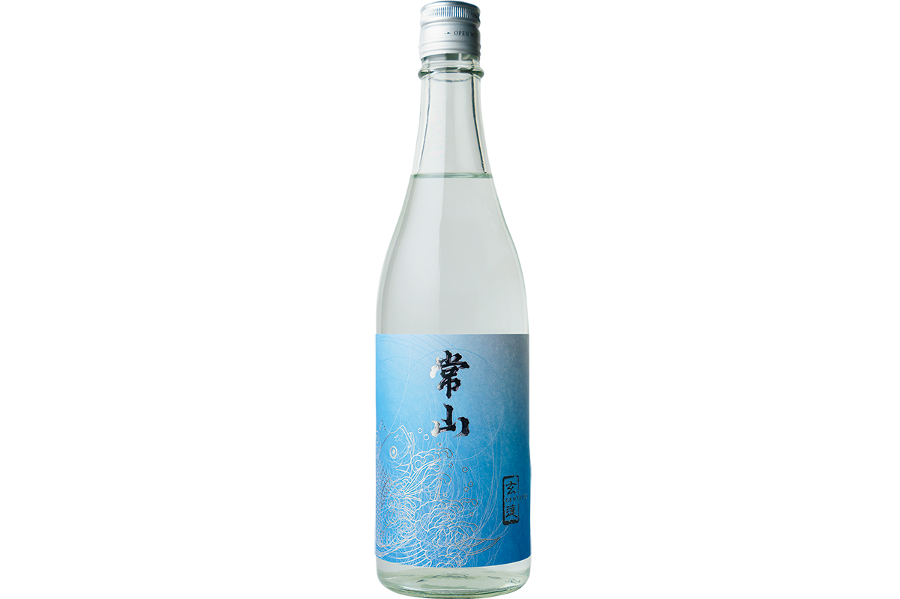
Сакэ освежает, как лимонад, и отлично подходит к нежной белой рыбе. Рис Гохякумангоку из Камиадзими в районе Мияма, степень шлифовки 50% для кодзи и 60% для основного риса, 15 градусов.
Зима: «Араисо»
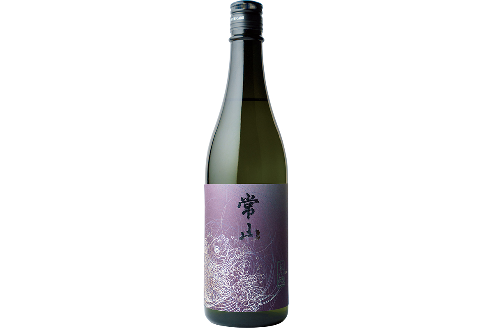
Название означает «бурный скалистый берег»: сакэ навеяно зимним Японским морем. Дзюммай дайгиндзё разливают в бутылки сразу после отжима, и лёгкие пузырьки лопаются во рту, как зимние волны. Дрожжи смешаны, поэтому есть и лёгкая фруктовость. Рис Гохякумангоку из Камиадзими, шлифовка 50%, 15 градусов.
Весна: Eika
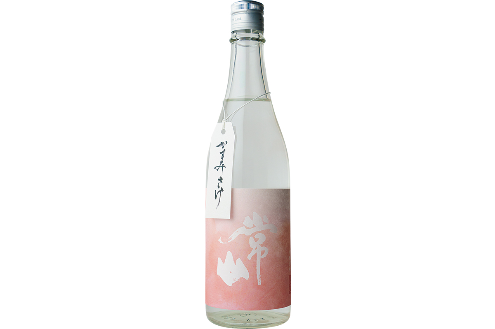
Выходит к риссюн, первому дню весны по старому календарю. Сакэ задумано как бутон, который распускается, когда открывают бутылку. Это нефильтрованное непастеризованное сакэ без разбавления, свежее и сочное, с лёгкой мутью, похожей на лёгкий весенний снег. Рис Сакахомарэ из района Окуэцу в Фукуи, 15 градусов.
Ранняя осень: Gingetsu
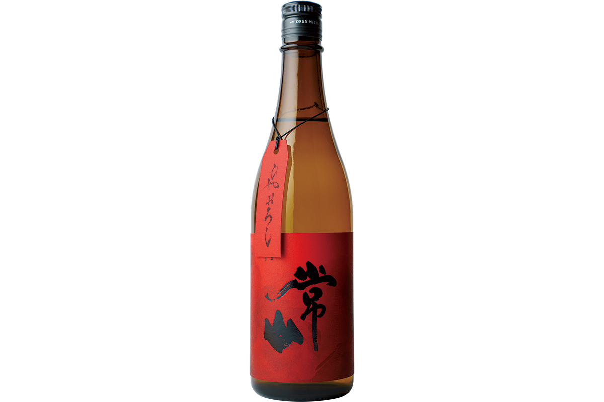
Осеннее сакэ выходит к сёсё, концу летней жары по старому календарю. Основной рис здесь поздних сортов, и вкус передаёт плотную сладость риса, пережившего лето. Сакэ не теряется даже рядом с жирной скумбрией, которой славится Фукуи. Рис для сакэ из префектуры Фукуи, 15 градусов.
«Осень в последние годы бывает совсем короткой, поэтому мы делаем осеннее сакэ под каждый год»
Симпэй Токояма
Поэтому соотношение дрожжей и сортов риса в Gingetsu меняется каждый год. Постоянный вкус важен, но нам близка и мысль о том, что сакэ не обязано застывать.
Поздняя осень: «Дзуйити»
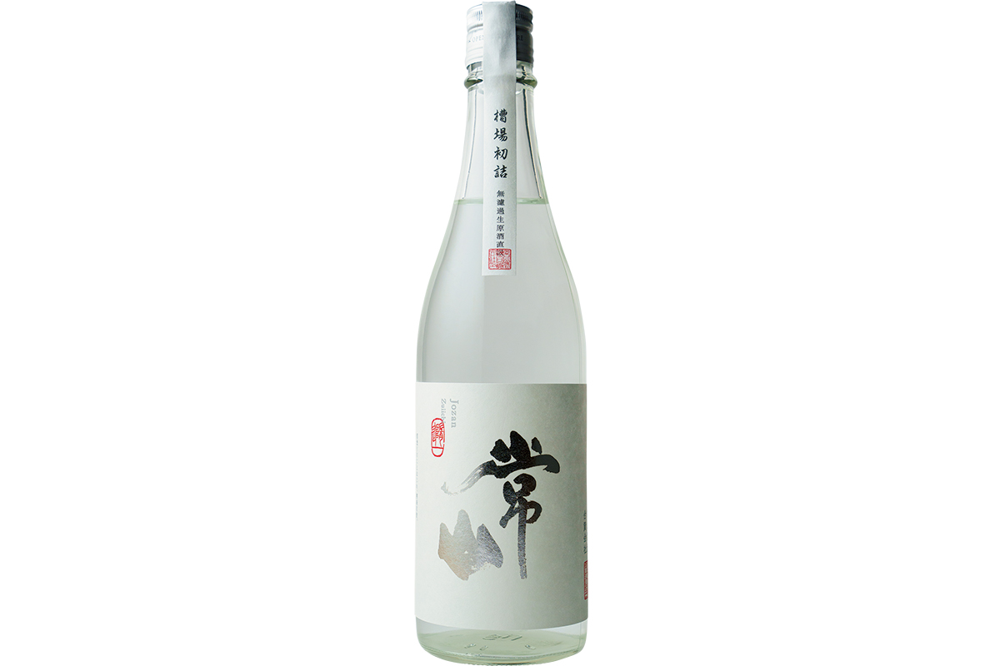
Первую партию сезона разливают прямо у пресса. Название значит «лучшее»: глава сакэварни хочет с самого начала сезона варить лучшее сакэ. Его задумали в пару к крабу Этидзэн-гани, зимнему символу Фукуи, поэтому у сакэ плотное тело и насыщенный вкус, который краб не перебивает. Рис Гохякумангоку из Камиадзими, шлифовка 50% и 60%, 15 градусов.
Каким было осеннее сакэ в 2020 году
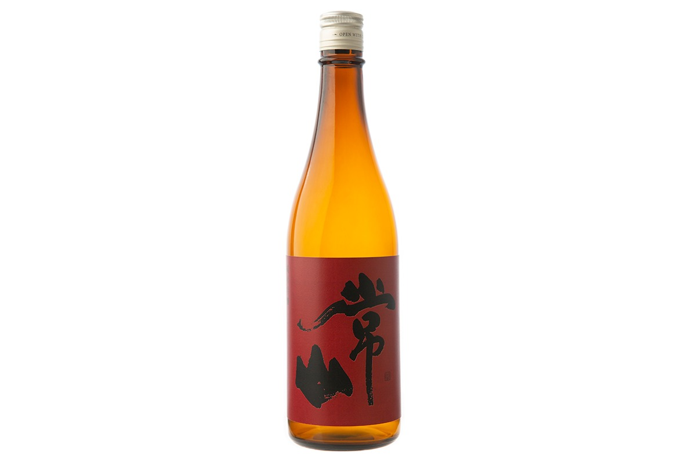
Хияороси это сакэ, которое варят зимой, пастеризуют один раз, оставляют зреть до осени и разливают без второго нагрева. По сравнению с молодым сакэ оно круглее и спокойнее, его часто пьют тёплым или комнатной температуры, а к сайре и грибам оно подходит идеально. В 2020 году хияороси Jozan варили из местного риса Ямада-нисики и Гохякумангоку на местных дрожжах: объёмный насыщенный вкус с чистым послевкусием, который при подогреве становится ещё богаче. Шлифовка 50% и 60%, сакэ-метр +4, кислотность 1,5, крепость от 16 до 17 градусов.
Фукуи
Сакэ и еда по маршруту главы сакэварни
Со станции Токио до Фукуи около 2 часов 50 минут на синкансэне Хокурику, и после продления линии синкансэна в 2024 году Фукуи стал гораздо ближе. Глава сакэварни показал нам, как, по его мнению, правильно провести день в городе.
Обедать он повёл в «Кура», где кацудон по умолчанию это свиная котлета в соусе на рисе с яичницей или сырым яйцом сверху. Вечером начинают с якитори: в главном заведении сети «Акиёси» берут «дзюнкэй», мясо курицы-несушки, и пиво. После этого, по его словам, нужно идти есть суши. Мы пошли в «Курагэ»: здесь обычно подают сет, но поздно вечером можно заказывать по отдельности. Мы взяли закуски, суши и местное сакэ.
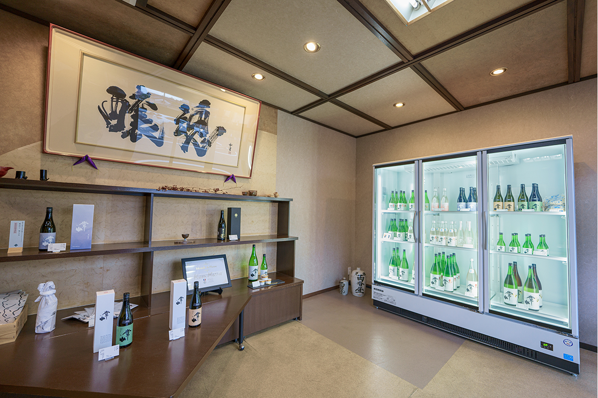
В магазине при сакэварне советуют покупать две бутылки: одну домой, другую выпить в синкансэне. А на станции Фукуи можно купить суши с жареной скумбрией и солёную икру морского ежа и устроить себе пикник в поезде.
Jozan
- Адрес
- префектура Фукуи, город Фукуи, Миюки, 1-19-10
- Телефон
- +81 776-22-1541 (экскурсий нет, платная дегустация)
- Часы работы
- 9:00–17:30
- Выходные
- воскресенье, праздничные дни
- Сайт
- jozan.co.jp
«Кура»
- Адрес
- префектура Фукуи, город Фукуи, Кита-Ёцуи, 1-1-8
- Телефон
- +81 776-53-6586
- Часы работы
- 10:30–20:00 (последний заказ)
- Выходные
- понедельник (если праздник, то вторник)
«Курагэ»
- Адрес
- префектура Фукуи, город Фукуи, Дзюнка, 1-10-2
- Телефон
- +81 776-22-7776
- Часы работы
- 17:00–23:00 (по предварительной записи)
- Выходные
- воскресенье
Фото: Томоаки Окуяма, Кадзуя Хаяси.